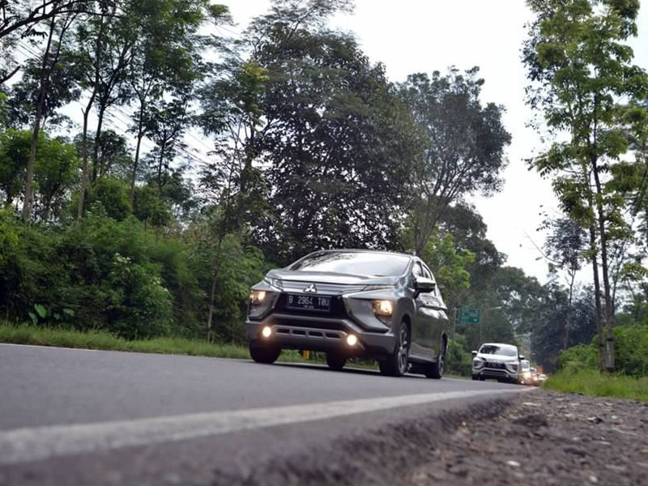
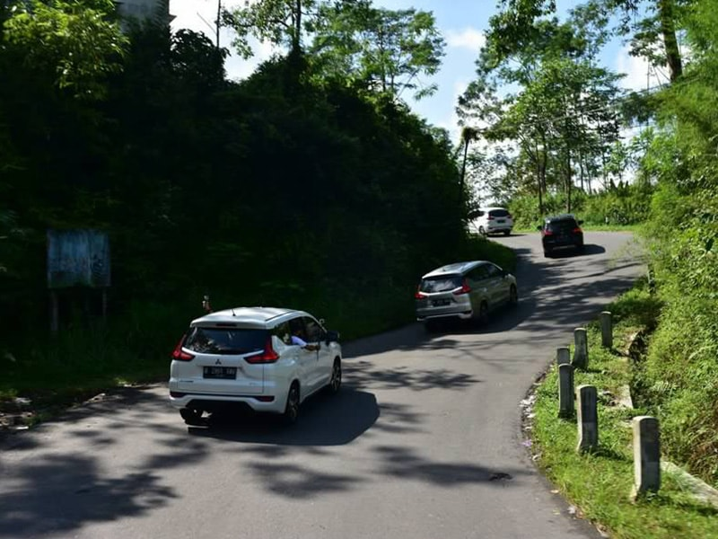
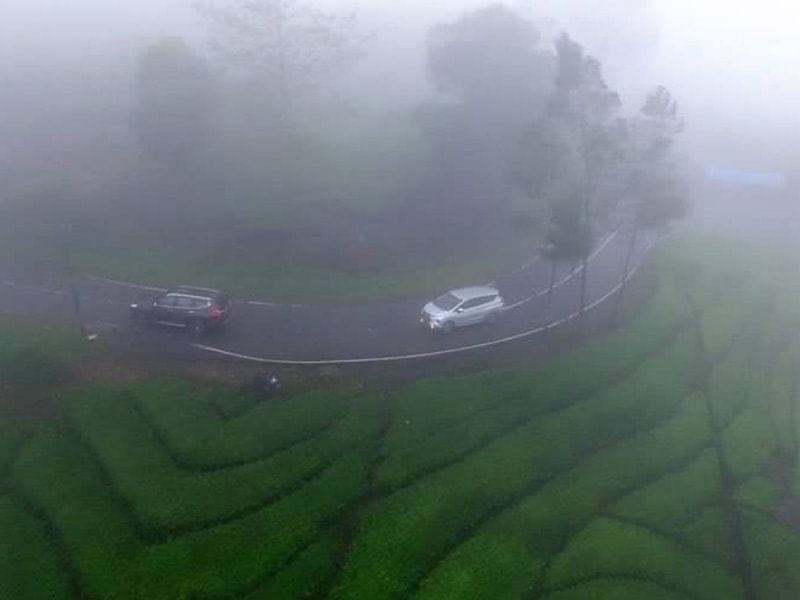

ADA RENCANA BERKENDARA DI JALUR PEGUNUNGAN? SIMAK DAHULU TIPSNYA BERIKUT INI
ADA RENCANA BERKENDARA DI JALUR PEGUNUNGAN? SIMAK DAHULU TIPSNYA BERIKUT INI
Berkendara di jalur pegunungan selalu menyuguhkan pemandangan alam yang menakjubkan. Menikmati pemandangan ini kadang membuat pengemudi terlena dan lupa akan kondisi jalan yang berliku dengan berbagai tantangan.
Baru-baru ini Mitsubishi Motors juga mengajak puluhan rekan-rekan media nasional untuk menguji Mitsubishi Xpander melalui jalur pegunungan. Rute yang ditempuh mulai dari Semarang hingga Solo dengan singgah di beberapa kawasan pegunungan seperti Kopeng, Ketep Pass, Rawa Pening hingga ke kaki Gunung Merapi.

Tentunya di jalur pegunungan ini selain udara sejuk, kadang adrenalin yang terpompa saat melibas jalur menikung dengan tanjakan atau turunan membuat kita lupa akan keselamatan. Untuk itu ada baiknya Anda perhatikan beberapa tips berikut ini sebelum mengemudi di jalur pegunungan.
Sebagai persiapan, uji rem dan lampu Anda terlebih dahulu, pastikan seluruhnya memiliki fungsi dengan baik. Di perjalanan, medan jalan yang berliku membuat pandangan pengemudi menjadi terbatas, ditambah dengan banyaknya blind spot atau titik buta akibat banyaknya pohon yang menghalangi pandangan ke depan. Kondisi ini tentunya bikin pengemudi butuh ekstra waspada, misalnya saat hendak menyalip kendaraan di depan. Jika menemukan ruas jalan dengan blind spot, baiknya segera kurangi kecepatan.

Terlebih lagi jika cuaca hujan yang kerap mengguyur area pegunungan yang disertai kabut tebal. Jangan lupa untuk sekedar membunyikan klakson atau nyalakan lampu untuk memberi tahu kehadiran Anda kepada pengemudi yang dari arah berlawanan.
Usahakan selalu menjaga jarak 5 detik dari mobil lain yang berada di depan. Tujuannya, memberi waktu saat pengereman mendadak, 5 detik dianggap waktu yang cukup merespon kejadian yang tidak terduga. Hindari juga gerakan tiba-tiba saat berkendara di cuaca kabut.

Kabut bisa menutupi permukaan jalan, disarankan pengemudi tetap mempertahankan mobil dengan kecepatan tidak terlalu kencang dan konstan, biasanya 30-40 km/jam. Hindari menyusul kendaraan lain bila tidak diperlukan. Usahakan tetap berkendara dalam satu jalur. Gunakan garis pembatas lajur sebagai petunjuk dan nyalakan lampu utama dan lampu kabut bila hujan dan kabut cukup tebal.